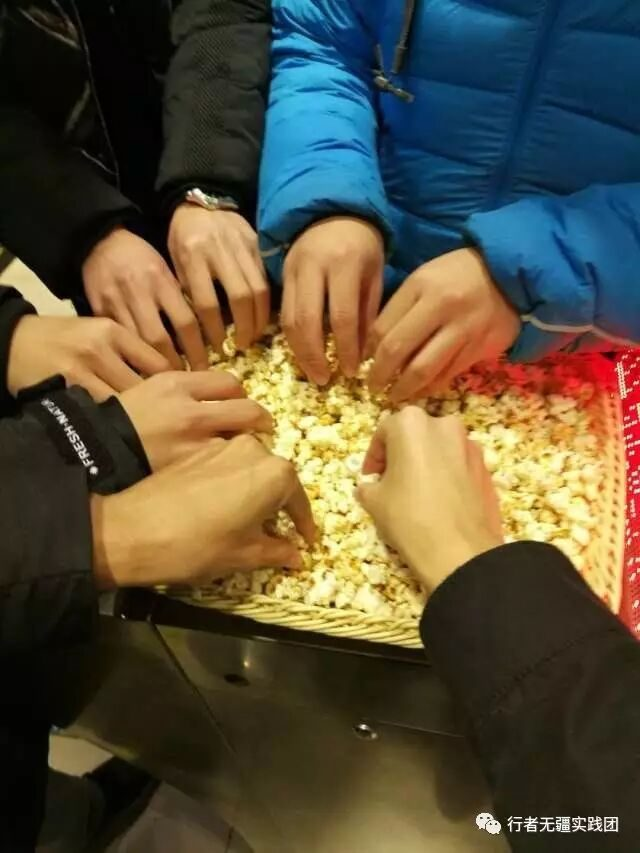
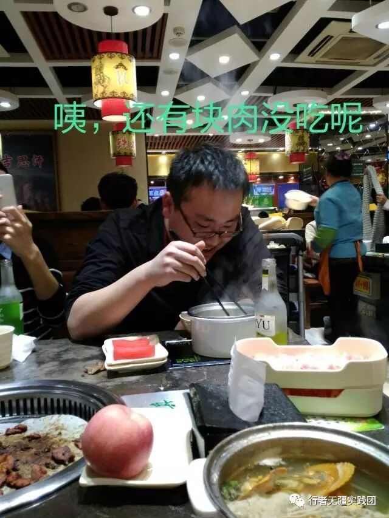
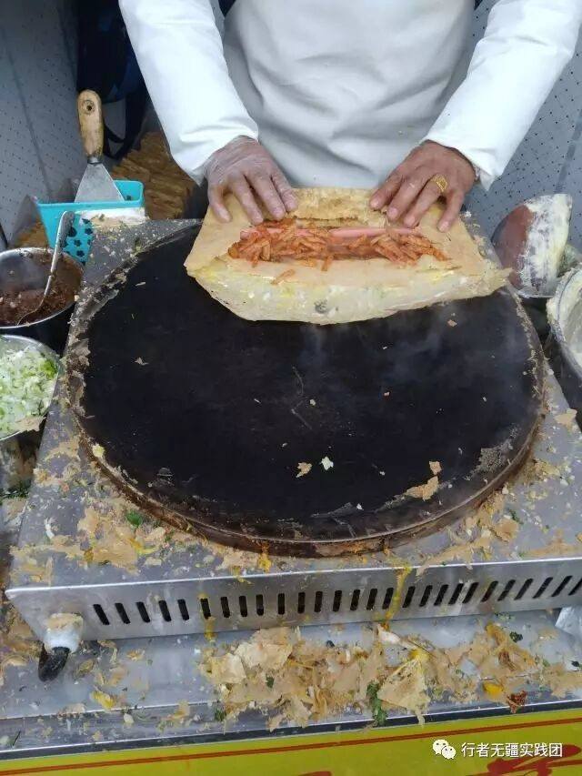

来自行者的第十七封信|从零到一，从一还是到一
从零到一，从一还是到一
文：李含笑
进入大学后，我一直在做社会实践，也一直在社会实践中成长。两次支教经历，带给我太多难忘的回忆，成为大学这片星空中最闪亮的星，几次企业行的经历，让我感受到学校与企业的差异，使我眼中的未来更加明了。
学期中我在考虑大三这个寒假做什么社会实践，文化调研的想法逐渐涌现于脑海中。齐鲁大地养育了我，这里的山水塑造了我的人格，耳濡目染中我的身上也有了儒家文化的烙印，当然，最引人注目的还是那平翘舌不分的“济宁版普通话”。曾有评委老师对我说：“你说话像周杰伦（我正准备谄媚的一笑），你说起话来和他唱起rap来一样让人听不清楚。”我板着一张黑人问号脸，心中无数草泥马奔腾。从济宁的小村庄到东北的大洼村，当年的青涩少年已变成老干部，不变的是乡土气息浓厚的腔调“si不si sa（是不是傻）”。
中学时读到了余秋雨先生的《文化苦旅》，接下来是《行者无疆》、《千年一叹》、《借我一生》等，那段被高考支配的岁月，是这些“闲书”帮助我多元化的发展。后来我走过了许多地方，见过了许多美景，也看过了许多美女，却从未回到故土，拥抱过这片熟悉却又陌生的土地。文学，我所欲也，故土，亦我所欲也，二者既可得兼，何不缘起而为之，开启一段属于自己的文化苦旅？

一个朝气蓬勃的团队
一时兴起不充分准备的去做一件事叫作荷尔蒙迸发，而想要成为一个优秀的团队并获得好的个人实践体验，团队的协作和个人的努力付出缺一不可。
做好一件事，先选对一群人。这个团队里，有我的老友，也有以前的队友，更多的还是素未相识的新面孔。认识新的朋友，带领新的团队完成新的事业，也是一种新的体验，而体验，是难得的成长。在我眼里，他们是充满热情的滚烫的新鲜血液，他们才是未来。
从团队的立项申请，到前期准备，到科普推送，到实地调研，再到后期宣传和深度挖掘，每个队员都参与其中，各司其职，完成分内工作。一名队员在一个团队中能够获得好的体验，便要有一种被需要的价值感和参与其中的融入感，所以我将团队的具体事务大部分都交由队员亲自完成，而我要做好幕后的工作，做一个齿轮，使每个零件能够高效协作运转。两个多月来，我看到队员们从陌生到熟悉，看到他们做事从无所适从到手到擒来，我能感受到大部分队员会认可自己的这次实践经历，当然，会有差异存在，万事古难全。
任何一段经历都会随着时间的流逝，被冲刷的逐渐模糊，但总有一些闪光的地方不会被抹去。“参加此次活动的出发点——辽宁盘锦”“请叫我大名（明）”、“我要吃遍山东”、“我找不到回宾馆的路了”、“嗯，这个解放阁，当时我军。。。”、“我带你们去吃把子肉”、“吹比专员”。如果地球上百分之三十的面积是陆地，那么剩下的百分之七十一定是留给正哥吹比用的（手动@***）。这是只有团队内部成员才能get到的笑点，是只属于行者无疆的回忆，当被提起，还是那么耳熟能详。
始于“行者无疆”社会实践，却不会止于此。团队能够做出来一些成果，队员能够有好的体验，成员能够有持续性的联系，便是对我最好的回馈，他们之中或许就有人成为暑期“梦起云滇”支教团的成员。
文化调研类社会实践，如果不用心去做就会变成游山玩水，也只有用心去做，才能感受得到文化的魅力，才能在所见所闻中能够有所思所悟。实地调研期间每天早上7点出发，晚上临近12点发出实践日记推送，每天团队成员平均走18000步，占据QQ运动排行榜前列，一次次被拒绝又一次次去采访、发放问卷。后期挖掘期间，发起文物保护倡议、队员实践心得分享、举办文化知识竞赛、联系并成功登上报纸和网站以及从始至终未曾落下的齐鲁文化科普，这些都在宣告团队是在用心做一件事，已然起步，未来也不会停下脚步，会有新人接住接力棒继续传承下去。梦起云滇能够在我和我的前辈的努力下成为支教类品牌，行者无疆也可以在我和我的后辈的努力下成为文化调研类品牌。
调研过程，是一段边走边写的故事。行在齐鲁，用心去呼吸她的气息，倾听她的声音，触摸她的肌肤，最先感受到的是“热闹”，不由得感叹：北国好风光，冰封又雪飘。窈窕佳人立，寒风催人泪。不及清泉畔，垂髫携黄发。在东北大洼村呆久了，出去感觉到处是人呐。
夜晚走到泉城广场，又是一群引领时代潮流的广场舞ladies和gentlemen，此地一别十年，期间经历过那次洪水，现在依然生气勃勃，一座城市的自愈能力的确强大。再去诸多泉的时候，已经是另一番心态，小时候来的时候只顾玩水，现在呢，水只顾玩我。在火车站旁边住了两晚，订的宾馆漏风，空调还不好使，不过宾馆给我们提供了特殊服务以表慰藉：火车通过的隆隆响声陪伴大家入眠，重回峥嵘岁月，专治贪睡嗜睡，不见效，不收费。

到了泰安，饭没怎么吃，杂粮煎饼一天吃了5个。做煎饼的大叔日出而作，日落而息，娴熟的手艺，美味的煎饼，合理的价格，简直让人无法拒绝，一座城市的小吃与这座城市的文化也密不可分。郭沫若说“科学不在远，就在猪圈旁。”那么文化也不在于繁文缛节中，而就在路边的杂粮煎饼摊。一花一草一木，都是一片天，针孔世界，可观天地之气。

岱庙门口有位老爷爷，以前是位泥瓦工，随口就为我们讲起了他自编的泰安文化顺口溜，内容我已记不太清，但他自信愉悦的神情仍历历在目，如此流利押韵的句子沉淀了几十年，现在又传到了我们耳旁。如果你想要了解一座老城，去和路边打牌的大爷唠唠嗑，去抚摸一下路边的古树，去逛一次这里的老街吧，了解一座城市的文化，先要去融入这座城市。
有时候，你还能看到许多与标签相悖的现象。越明亮的灯光后面，会存在更黑暗的阴影。在曲阜这个儒家文化圣地，这片礼仪之邦，这块孔子安息的土地，我们团队在三孔前遇到有劳动能力却来讨钱混饭的伸手老奶奶，说奶奶，是因为我敬重她年长，说混饭，是因为我鄙视她的行为。后来打车我们又遇到了不打表漫天要价且态度蛮横的正规出租车司机，我们走到哪都应尽到一个大学生的责任，注意我们的素质，但也要维护我们的合法权益，向不法势力还击。最终我们通过合法渠道讨回了被多收取的费用，有关部门也对司机做出了处罚。
一行下来，我看到许多文化古迹遭到不同程度的破坏，有天灾，但更多的是人祸。三孔内不少碑上有着红卫兵留下的记号，趵突泉内投满了硬币，赑屃的鼻孔光滑剔透，雕像的面部铮亮。。。。。。尽管如流往事已随风而去，随着时代的变迁，朝代的更迭，有些东西应该被淘汰，但这些留存下来的文物大多是财富。一个人做坏事，会成为众矢之的，一群人做坏事，会使不道德的成为合法的，一个人做好事，阻力重重，一群人做好事，顺水推舟。所以，无论是保护文物，还是保护环境，还是改善社会风气，需要每个人善其身，互相监督，而不是穿着貂皮大衣说保护动物，卖着过期食品抨击社会黑暗，收着贿赂指责贪污腐。
一些即兴而发的感触
所谓社会实践，大家褒贬不一，无非是支持的人赞其有利，反对的人批其费时无用。这当然是没有答案的问题，但我坚信没有缺乏美的风景，只有不想去发现美的人，而这种人，要么不用心，要么不用力。我的一生会去做两种事，一种是为了生存，解决衣食住行的问题，一种是为了生活，做我所喜欢的事，追寻我的理想。所以对我来说没有有用无用之分，生存是为了更好的生活，但如果没有生活，我宁愿放弃生存。
年轻的大一新生，踌躇满志，对即将开始的实践分外积极，认真努力，也有些紧张。曾几何时，人们也如此热情洋溢，为何随着年龄增长却俞显疲倦和拖沓，我想这值得去深思，所谓成长成熟只不过是托词而已。
当让你心动的再也感动不了你，让你愤怒的再也激怒不了你，让你悲伤的再也不能让你流泪，你便知道这时光，这生活给了你什么，你为了成长，付出了什么。有时候人们错把麻木当作成熟，活在自欺欺人的世界里，最终泯然众人，湮没于茫茫人海中。如果所谓成熟的代价是丢失掉身上美好的品质，变得麻木不仁，精致利己，坠入盲目大众的洪流中，那我宁愿永远做一个孩子。
这次实践，源于突发奇想，陷于这帮新面孔的热情，忠于一名队长的责任心，止于无疆。